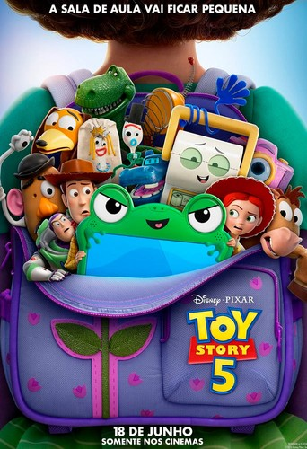

Em Toy Story 5, os brinquedos tradicionais enfrentam um grande desafio moderno quando Bonnie, agora com 8 anos, se distrai com um tablet chamado Lilypad. Com a tecnologia roubando a atenção da menina, Jessie assume a liderança para manter a turma unida, enquanto Woody retorna para ajudar os velhos amigos a lidarem com essa nova realidade digital.
Clique aqui para saber mais sobre o filme